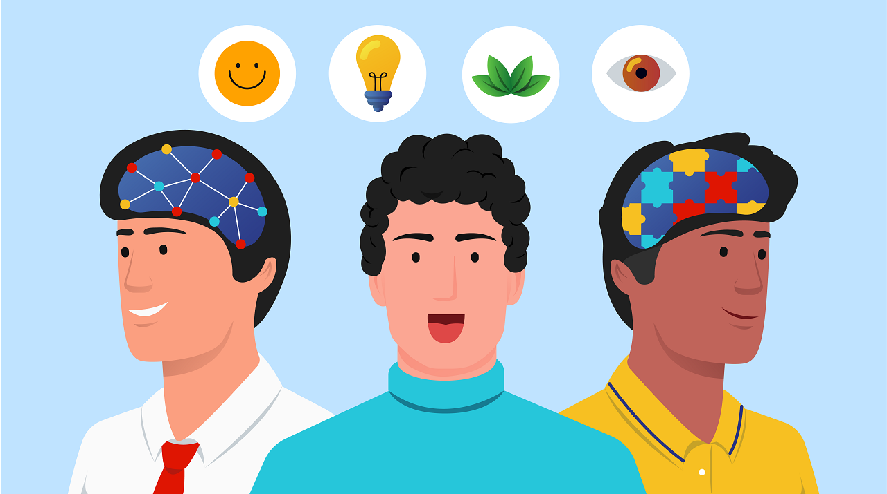

The five major personality traits are openness to experience, conscientiousness, extraversion, agreeableness, and neuroticism.

22/06/2023
Gaining insights into human behavior and motivations is essential for understanding how individuals interact with the world. Psychologists have identified five major personality traits that serve as a framework for characterizing and describing individual differences. In this article, we will delve into these five traits, with a particular emphasis on neuroticism and its significance in personality assessment.
Personality traits provide a systematic way of categorizing and analyzing human behavior. They represent enduring patterns of thoughts, emotions, and behaviors that shape an individual's personality. The five major traits are commonly referred to as the Big Five or the Five Factor Model, which include openness to experience, conscientiousness, extraversion, agreeableness, and neuroticism.
Neuroticism, the focus of this article, reflects the tendency for emotional instability, negative affectivity, and reactivity to stressors. Individuals high in neuroticism are prone to experiencing frequent and intense negative emotions such as anxiety, depression, and irritability. They may exhibit heightened sensitivity to perceived threats, leading to emotional volatility and a predisposition to psychological distress.
Understanding neuroticism is crucial as it provides valuable insights into how individuals respond to stress, cope with adversity, and maintain emotional well-being. High levels of neuroticism can negatively impact various aspects of life, including relationships, work performance, and overall quality of life. Conversely, individuals with low levels of neuroticism tend to be more emotionally stable, resilient, and better equipped to handle challenges.
By exploring the significance of neuroticism in personality assessment, we can gain a deeper understanding of how this trait influences behavior, emotions, and psychological well-being. Understanding the interplay between neuroticism and other personality traits allows for a comprehensive understanding of individual differences and paves the way for tailored interventions and strategies to promote mental health and well-being.
Neuroticism is one of the five major personality traits that characterizes an individual's tendency to experience negative emotions, such as anxiety, depression, and mood swings. People who score high in neuroticism are more susceptible to emotional instability, stress, and worry. They often find it challenging to regulate their emotions effectively and may react strongly to perceived threats or stressful situations.
The impact of neuroticism can be far-reaching, influencing various aspects of an individual's life. In relationships, those high in neuroticism may struggle with emotional vulnerability, leading to difficulties in establishing and maintaining healthy connections. Their emotional instability and sensitivity to criticism can strain interpersonal dynamics.
In the workplace, neuroticism can affect performance and productivity. High levels of neuroticism often correlate with increased stress levels and decreased job satisfaction. Individuals may struggle with decision-making, as their excessive worry and self-doubt can impede their ability to take risks and make confident choices
Furthermore, neuroticism can have implications for overall well-being. Persistent negative emotions and a heightened sensitivity to stressors can contribute to poor mental health outcomes. Individuals high in neuroticism may be more prone to developing anxiety disorders, depression, and other psychological conditions
Recognizing and understanding neuroticism, both in oneself and others, is crucial for fostering self-awareness and facilitating positive interpersonal interactions. By acknowledging and addressing this trait, individuals can develop strategies to manage their emotions effectively, seek support when needed, and cultivate resilience. Additionally, understanding neuroticism in others allows for empathy and compassion, promoting healthier and more understanding relationships.
It is important to note that neuroticism is just one aspect of an individual's personality, and it does not define their entire being. With self-reflection, support, and effective coping mechanisms, individuals can navigate the challenges associated with neuroticism and lead fulfilling and balanced lives.
( Find your burning business problem's solution here... )
Extraversion is a personality trait that reflects an individual's inclination towards seeking social stimulation and deriving energy from interactions with others. Those who exhibit high levels of extraversion are typically outgoing, talkative, and assertive in their interactions. They thrive in social settings and often feel recharged and invigorated by being around people.
Extraverted individuals display traits such as enthusiasm, assertiveness, and a tendency towards experiencing positive emotions. They are often seen as sociable, friendly, and energetic. Their outgoing nature makes them comfortable in social situations, and they often excel in roles that require networking, teamwork, and public speaking. They enjoy engaging with others, building relationships, and participating in group activities.
It is important to recognize that extraversion and introversion exist on a continuum, and individuals can exhibit characteristics of both traits to varying degrees. Some people may lean more towards extraversion, while others may lean more towards introversion. This spectrum highlights that people have unique preferences when it comes to social interactions and energy expenditure.
While extraversion can bring many advantages, such as the ability to connect with others easily and navigate social dynamics, introversion also has its strengths. Introverted individuals tend to be reflective, introspective, and thoughtful, often excelling in tasks that require deep focus and concentration.
Understanding and appreciating both extraversion and introversion is essential for promoting diversity and creating inclusive environments that cater to the preferences and strengths of individuals across the spectrum. Each personality trait brings valuable contributions, and by embracing and accommodating these differences, we can foster collaboration and harness the full potential of all individuals in various contexts.
( Find your burning business problem's solution here... )
Openness to experience is a trait that signifies an individual's propensity for embracing novelty, creativity, and intellectual curiosity. People who score high in openness are characterized by their receptiveness to new ideas, imaginative thinking, and open-mindedness. They possess a natural inclination towards exploring different perspectives, engaging in artistic or intellectual pursuits, and seeking out diverse experiences.
One of the key aspects of openness is creativity. Individuals high in openness tend to exhibit a heightened sense of imagination and originality. They are inclined to think outside the box, generate innovative solutions, and approach problems from unconventional angles. Their creative mindset allows them to explore uncharted territories, challenge existing norms, and generate fresh insights.
Intellectual curiosity is another hallmark of openness. Individuals with high openness possess a genuine thirst for knowledge and a strong desire to understand the world around them. They are avid learners who actively seek out opportunities to expand their intellectual horizons. Their curiosity drives them to ask thought-provoking questions, delve into complex subjects, and engage in intellectual discourse.
Moreover, openness is closely linked to adaptability and flexibility. Open individuals are more receptive to change and less resistant to new experiences. They have a willingness to step out of their comfort zones, embrace uncertainty, and embrace new challenges. Their ability to adapt to new situations and ideas allows them to thrive in dynamic and rapidly changing environments.
In summary, openness to experience reflects an individual's inclination towards novelty, creativity, and intellectual curiosity. People high in openness exhibit a willingness to embrace new ideas, possess imaginative thinking, and are open to diverse perspectives. Their adaptability and intellectual curiosity enable them to navigate the complexities of life with a sense of exploration and a readiness to embrace change.
( Find your burning business problem's solution here... )
Agreeableness is a personality trait characterized by a person's inclination to be cooperative, empathetic, and compassionate towards others. Individuals who score high in agreeableness value harmonious relationships, prioritize the needs of others, and engage in prosocial behaviors. They tend to be warm, considerate, and trustworthy, creating an atmosphere of positivity and cooperation in their interactions.
One of the key aspects of agreeableness is empathy. People high in agreeableness have a heightened ability to understand and share the feelings of others. This empathetic nature enables them to connect deeply with others and respond with care and support. Their kindness and compassion make them approachable and reliable individuals whom others can rely on for emotional support and understanding.
Altruism is another trait associated with agreeableness. Those high in agreeableness genuinely care about the well-being of others and are willing to go out of their way to help them. They have a strong desire to contribute to the welfare of their communities and society as a whole. This trait makes them well-suited for roles that involve caregiving, social work, or volunteer work, where their innate desire to assist others can be effectively channeled.
Furthermore, individuals with high agreeableness thrive in environments that emphasize teamwork and collaboration. They excel in careers that require strong interpersonal skills, such as customer service, counseling, and team management Their ability to create positive and harmonious relationships fosters effective teamwork, cooperation, and conflict resolution.
In summary, agreeableness is a personality trait characterized by cooperation, empathy, and compassion. Those high in agreeableness contribute to the well-being of others through their kindness, altruism, and proclivity for building positive social connections. Their natural strengths in interpersonal skills make them valuable assets in teamwork-oriented environments and professions that involve caring for and serving others
( Find your burning business problem's solution here... )
Conscientiousness is a fundamental personality trait that encompasses various characteristics and behaviors related to organization, self-discipline, and goal-orientedness. Individuals who possess high levels of conscientiousness exhibit a diligent and responsible approach to their tasks and responsibilities. They have a natural inclination towards being detail-oriented, ensuring that every aspect of their work is thoroughly considered and executed with precision.
One of the key attributes of conscientious individuals is their ability to prioritize tasks effectively. They have a clear understanding of the importance and urgency of different assignments, allowing them to allocate their time and resources efficiently. By systematically organizing their workload, they can navigate through multiple responsibilities and meet deadlines consistently.
Furthermore, conscientiousness is closely associated with traits such as reliability and dependability. Individuals high in conscientiousness are known for their consistency and trustworthiness. They take their commitments seriously and strive to fulfill them to the best of their abilities. This reliability earns them the respect and confidence of others, as they can be counted on to deliver results consistently.
In addition, conscientious individuals demonstrate self-discipline and perseverance in their pursuit of goals. They possess the ability to delay immediate gratification and focus on long-term objectives. Their strong work ethic and determination enable them to stay committed to their tasks, even when faced with challenges or setbacks. This perseverance allows them to overcome obstacles and achieve excellence in their endeavors.
Given their meticulousness, conscientious individuals often thrive in roles that demand attention to detail, precision, and long-term planning. They excel in professions that require systematic organization, thoroughness, and adherence to established procedures.
In summary, conscientiousness reflects a valuable set of qualities that contribute to personal and professional success. The diligent, responsible, and detail-oriented nature of conscientious individuals enables them to prioritize tasks, plan effectively, and strive for excellence. By embodying these traits, individuals can enhance their productivity, reliability, and overall performance in various domains of life.
( Find your burning business problem's solution here... )
The five major personality traits offer a valuable framework for comprehending and characterizing the diverse range of human behaviors. By recognizing and understanding these traits within ourselves and others, we can cultivate self-awareness, enhance interpersonal relationships, and make well-informed decisions across various aspects of life.
The first personality trait is extraversion. Extraverts are typically outgoing, sociable, and energized by social interactions. They thrive in group settings and often seek external stimulation. In contrast, introverts tend to be more reserved, introspective, and draw energy from solitude. Recognizing where individuals fall on the extraversion-introversion spectrum allows us to better understand their needs for social interaction and personal space, fostering more harmonious relationships.
The second trait is conscientiousness. Conscientious individuals are organized, diligent, and value responsibility. They tend to be reliable and strive for excellence in their work. Those lower on the conscientiousness scale may be more spontaneous and flexible. Recognizing these differences in conscientiousness enables us to appreciate diverse work styles, allocate tasks effectively, and promote collaboration.
The third trait is openness to experience. Open individuals are imaginative, curious, and receptive to new ideas and experiences. They embrace creativity and enjoy exploring different perspectives. Those who are less open may prefer familiarity and tradition. Understanding these differences in openness allows us to foster a climate that encourages innovation and respects differing viewpoints.
The fourth trait is agreeableness. Agreeable individuals are compassionate, cooperative, and empathetic. They prioritize harmonious relationships and value the feelings of others. Those who are less agreeable may be more assertive and prioritize their own needs. Recognizing these variations in agreeableness helps us navigate conflicts, promote effective communication, and build strong interpersonal connections.
The fifth and final trait is neuroticism. Neurotic individuals tend to experience higher levels of negative emotions such as anxiety and mood swings. Those with lower levels of neuroticism are generally more emotionally stable. Recognizing these differences in emotional stability allows us to approach individuals with empathy and understanding, offering appropriate support when needed.
By familiarizing ourselves with these five major personality traits, we can gain valuable insights into ourselves and others. This knowledge enables us to navigate social dynamics, enhance our communication skills, and make informed decisions that promote personal growth and successful interactions in all aspects of life.
The five major personality traits are openness to experience, conscientiousness, extraversion, agreeableness, and neuroticism.
Neuroticism is a personality trait characterized by emotional instability, negative affectivity, and reactivity to stressors. Individuals high in neuroticism experience frequent and intense negative emotions such as anxiety, depression, and irritability.
High levels of neuroticism can impact relationships by making it difficult for individuals to establish emotional vulnerability and maintain healthy connections. Emotional instability and sensitivity to criticism can strain interpersonal dynamics.
Neuroticism can affect work performance by correlating with increased stress levels and decreased job satisfaction. Excessive worry and self-doubt can impede decision-making and the ability to take risks.
Extraverted individuals are often outgoing, sociable, and energized by social interactions. They excel in networking, teamwork, and public speaking. Their ability to connect with others easily allows them to navigate social dynamics effectively.

Marketing is the process of creating, communicating, delivering, and exchanging offerings that have value for...
Explore →
In today's rapidly changing and fast-paced world, effective leadership is of paramount importance in guiding individuals, teams...
Explore →
In today's rapidly changing professional world, the significance of continuous skill enhancement and professional...
Explore →